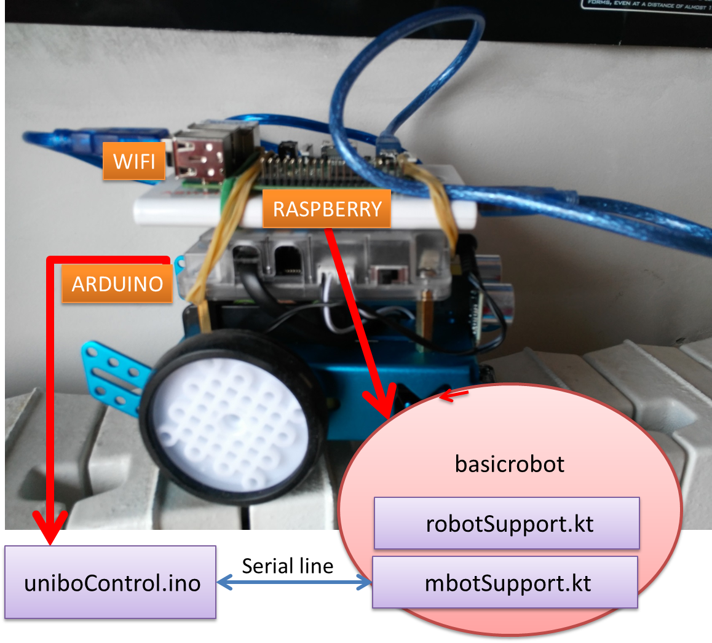
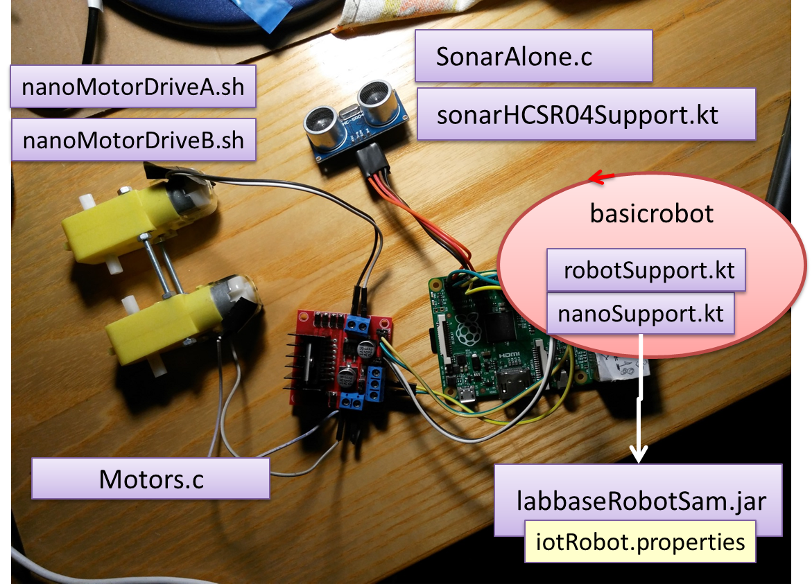

72939 - LAB12 | Using real robot devices
LabISS-lectures site
Index
- The project
- Using mbot
- Using nano
The project
The project
it.unibo.eclipse.qak.robots19 builds a software systems that allows us to send commands to a
real robot by using a
MQTT broker running on a conventional
PC.

|
Workflow:
- activate the MQTT broker on a PC of IP address= 192.168.x.y.
- activate the WEnv simulator, if you want to use the virtual robot (see runWenv.bat,
and then open localhost:8090 in a browser).
|
The nano robot
|

|
See UsingRobots2019.pdf sections 3.
robotplayer is an actor that
- executes basic robot commands w|a|s|d|h
- handles the event sonarRobot: sonar( DISTANCE )
- emits the event polar : p( Distance, Angle )
|
Using nano
|

|
See UsingRobots2019.pdf sections 3.
See Lab8.html
(important for the motors).
robotplayer is an actor that
- executes basic robot commands w|a|s|d|h
- handles the event sonarRobot: sonar( DISTANCE )
- emits the event polar : p( Distance, Angle )
|
Work to do
With reference to the project
it.unibo.eclipse.qak.robots19:
- Execute
gradle -b build_ctxBasicRobot.gradle distZip
- Copy the distribution file it.unibo.eclipse.qak.robots19-1.0.zip on RaspberryPi
- Unzip the file
- In the directory bin the files:
- copy the file basicrobot.pl
- copy the file sysRules.pl
- copy the file basicRobotConfig.pl
- copy the file hardwareConfiguration.properties
- create the directory configuration/nano/ and copy in it the file iotRobot.properties
- copy the file SonarAlone.c and compile it (g++ SonarAlone.c -l wiringPi -o SonarAlone)
- in the directory bin execute:
sudo bash it.unibo.eclipse.qak.robots19
- (On the PC) launch the radar and execute (to open a command console)
MainCtxConsoleGui